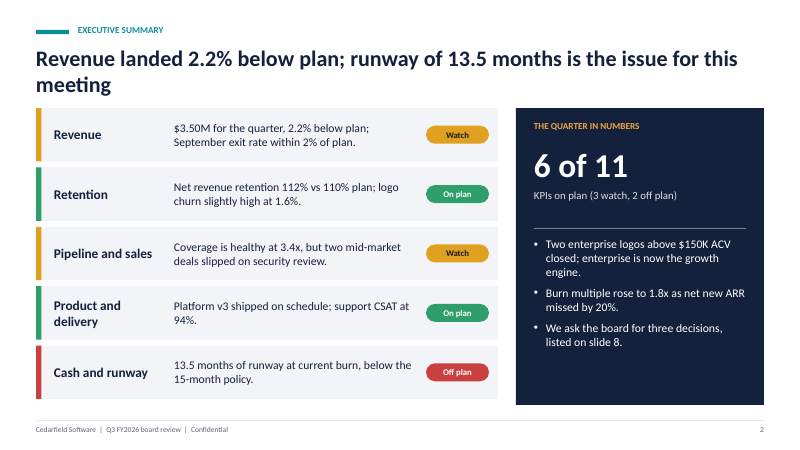
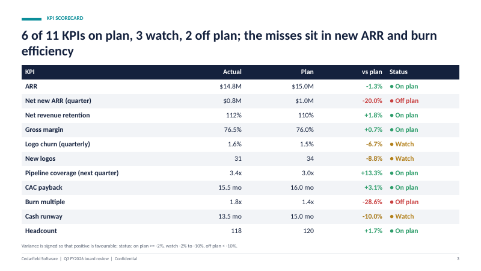

Claude Code skills for PowerPoint: what works, what doesn’t
Skills can turn Claude Code into a decent deck builder, but only for some kinds of decks. Here is where the approach is strong, where it is weak, and how to pick between a general pptx skill and a purpose-built one.
Short version: skills work well for structured decks with data (board updates, pitch decks, reports) where layout can follow rules. They work poorly for design-led decks, heavy imagery, animation and strict corporate templates. Judge any PowerPoint skill by three questions: are the charts native, does it check its own output, and does it refuse to invent numbers?
What a “PowerPoint skill” is
A skill is a folder with a SKILL.md file (instructions for the agent) and usually scripts. A PowerPoint skill tells Claude Code how to create or edit a .pptx, typically by running Python with python-pptx or a JavaScript library, and what to check afterwards. If you are new to the format, this guide explains how skills load and install.
There are broadly two kinds:
- General-purpose pptx skills teach the agent to read, edit and create any deck. Anthropic publishes document skills in its public skills repository, and the community has many variants. They are flexible and ask you to supply the structure.
- Purpose-built skills produce one kind of deck (a seed pitch, a quarterly board review) with a fixed layout, computed numbers and a QA step. They are less flexible and usually faster to a good result for that one job.
What works well
Structured, data-driven decks
Decks where every slide has a clear job and some numbers behind it suit code. A script can lay out a KPI table, a revenue-versus-plan chart and a risk list consistently across nine slides, and it does not get tired and misalign slide 7.
Native, editable charts
python-pptx can create real PowerPoint chart objects (column, bar, line, pie, doughnut and others) backed by an embedded data sheet. That matters when your CFO says “change the Q3 bar” and you can do it in two clicks. A skill that renders charts as pictures through matplotlib is faster to write but gives you something nobody can edit. Ask which one it does.
Consistency and repeatability
The same input produces the same file. For monthly or quarterly decks, you change the data file and rebuild. That is where a script beats a chat prompt that may reorganise your deck differently every time.
Self-checks
A script can re-open the saved file and test things humans miss late at night: text running off a box, an empty placeholder, a slide with no title, a chart with the wrong number of points.


What does not work well
Design-led decks
Code-generated slides are tidy and a bit plain. If you need custom illustration, a distinctive grid, full-bleed photography or a brand book followed to the letter, a designer or a template-driven tool will beat a script.
Strict corporate templates
Editing an existing .pptx that uses your company’s slide master is a different (and harder) task than creating a fresh deck. Skills that claim both are worth testing with your actual template before you rely on them. Layouts, placeholders and theme fonts in the master are easy for a script to break.
Animations, transitions, video, SmartArt
These are weakly supported or unsupported in python-pptx. If your presentation depends on them, plan to add them by hand.
Editing an existing chart’s data in place
Creating a chart from data is well supported. Changing the data of a chart that already exists in someone else’s deck is more awkward, and third-party descriptions of the library’s limits are inconsistent, so test it on your file before building a workflow around it.
Judging how it looks
The model writing the code cannot see the slide. A good skill compensates by rendering to images and having the agent look at them, which needs LibreOffice or similar installed. Without that step, overlap and cramped text slip through. And a LibreOffice render is not identical to PowerPoint, especially with fonts.
A checklist for judging any PowerPoint skill
- Open the example output in PowerPoint. Click a chart. Is there a data sheet? Click a text box. Is it real text?
- Read the SKILL.md. Does it tell the agent to ask for missing facts, or does it encourage invention?
- Check for a QA step. Overflow, placeholders, slide count and chart count are the minimum.
- Look at what runs. Skills run code on your machine. Read the scripts, or at least check they do not make network calls you did not expect.
- Test with a real brief, not the demo. Thin or messy inputs show how the skill behaves under stress.
- Check the licence. Can you use the output commercially, and can you modify the skill?
Which to choose
| You need | Better fit |
|---|---|
| A one-off deck with a free-form story | A general pptx skill or a plain prompt, then heavy manual editing |
| A recurring board or QBR deck from changing numbers | A purpose-built skill, so the structure and checks stay fixed |
| A seed or Series A deck | A purpose-built pitch skill, see the pitch deck guide |
| Brand-perfect slides in your template | Your designer, or test a skill on your actual template first |
| Decks with animation or video | PowerPoint itself |
Where the Boardroom Skills decks fit
Boardroom Skills has two deck skills: investor-pitch-deck (13 slides, free) and board-qbr-deck (9 slides, PRO). Both use the same layout kit, three colour themes, auto-fitting text that raises an error instead of overflowing, native charts and a QA script. They are deliberately narrow. If you want a different structure you will either edit the JSON spec and scripts or use a general skill. And a code-built deck remains a first draft: read it, check the numbers against your source, and finish the design in PowerPoint. For the board version, see the QBR template guide.
Free downloads: the pitch deck template and case study template in PowerPoint.
Disclosure: I make and sell Boardroom Skills. Nothing here is legal, financial or investment advice. Company names and numbers in screenshots are fictional.